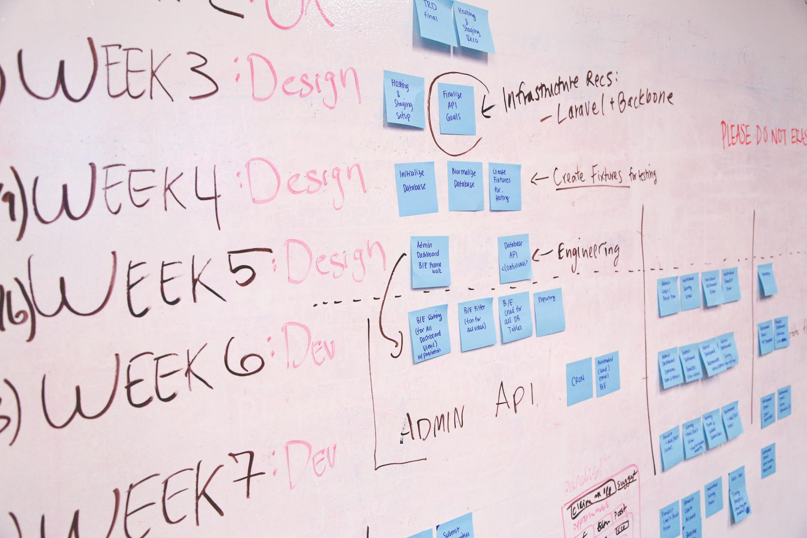
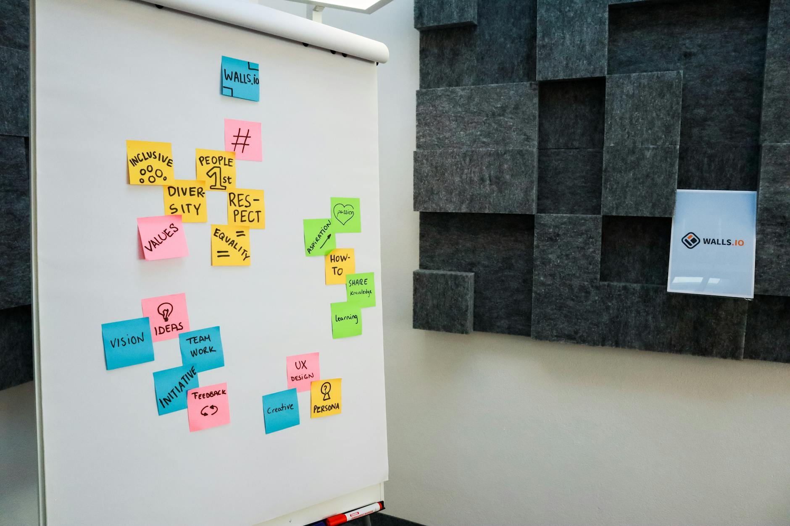

TL;DR
For beginners, affiliate marketing requires proper niche selection, quality content creation, and consistent traffic strategies. Expect to spend 10-15 hours weekly. Use programs like Amazon Associates to start and aim for your first commissions within 30 days.
The Affiliate Marketing Starter's Challenge
If you're new to affiliate marketing, you're likely filled with excitement and high hopes. Many beginners assume that promoting a few products will lead to instant income, often skipping essential groundwork.
The reality, however, is quite different. Expectations shift when facing initial challenges like selecting a profitable niche, understanding customer psychology, and dealing with the competition.
A prime example of this is the allure of high-ticket items such as luxury watches. Many beginners dream of earning hefty commissions but often overlook the importance of building a trustworthy brand first.
Why Common Advice Falls Short in Affiliate Marketing
Many would-be marketers jump into affiliate promotions without clear strategies, relying on broad advice that lacks depth. They often overlook the importance of thorough market research and choose niches simply based on popular trends.
For instance, selecting a niche like health supplements by mirroring others fails if you don't understand the audience's specific needs. The mistake lies in ignoring your unique value proposition.
This oversight can lead to wasted time and money. Additionally, beginners might underestimate the importance of search engine optimization (SEO) and content quality, which are crucial for driving traffic.
Missing these aspects creates a gap, leaving you frustrated with minimal returns on your marketing efforts.
The Essential Workflow to Launch Your Affiliate Marketing
Launching your affiliate marketing venture requires a systematic approach. Below are essential steps that will streamline your workflow: 1) Choose Your Niche: Identify a niche that not only interests you but also has profitability potential.
2) Research Affiliate Programs: Look for reliable affiliate programs within that niche, like Amazon Associates or ShareASale, suitable for beginners. 3) Build Your Platform: Create a website or blog optimized for your niche.
4) Develop Quality Content: Produce engaging and valuable content that addresses your audience’s pain points. 5) Drive Traffic: Utilize social media, SEO strategies, and paid ads to attract traffic.
6) Analyze and Optimize: Monitor your traffic and conversion metrics to make necessary adjustments. This structured workflow can take about one month to establish effectively.
A 30-Day Journey: From Zero to Launch in Affiliate Marketing

Embarking on your affiliate marketing journey within a structured timeline can yield impressive results if approached strategically. Consider this comprehensive 30-day plan designed to optimize your efforts and ensure you are set for success.
Week 1: Research and Select Your Niche Start by dedicating the first week to in-depth market research. Analyze demand using tools like Google Trends or SEMrush, and evaluate competition by browsing through affiliate sites in your chosen sector.
For example, if you're passionate about fitness, identify sub-niches such as home workouts, nutrition supplements, or yoga equipment. Aim for niches with a potential monthly search volume of at least 1,000-10,000 keywords to ensure there’s enough audience interest.
By the end of this week, narrow your focus and select a niche that not only excites you but also has viable earning potential.
Week 2: Join Affiliate Programs and Set Up Your Website After choosing your niche, spend Week 2 signing up for relevant affiliate programs such as Amazon Associates, ShareASale, or ClickBank.
Each program has its criteria for approval; aim for at least three to five networks to diversify your income sources. Next, use platforms like WordPress or Wix to set up your website.
Allocate about $100-$150 for domain registration and hosting. In this week, your goal should be to have a professional-looking site with basic pages—Home, About, and Contact—established by Day 14.
Week 3: Create Content During Week 3, now it’s time to create valuable content that speaks directly to your target audience. Start with blog posts focused on keywords identified in your initial research—aim for at least 3-5 posts, each around 1,000 words.
For instance, write a post titled "Top 10 Home Workout Routines for Beginners" and optimize it for SEO to increase organic traffic. Utilize social media platforms to share snippets and drive engagement—commit to posting at least 4 times a week.
By the end of this week, aim to establish a content calendar that guides future topics and posting schedules.
Week 4: Execute Promotional Activities In the final week, focus on execution. Start by employing promotional strategies such as email marketing, influencer collaborations, or pay-per-click advertising.
For instance, consider allocating $50-$100 for Facebook ads targeting your niche to boost traffic to your site. Keep your analytics tools ready; platforms like Google Analytics will help you monitor traffic sources and user behavior.
By the end of Week 4, your goal should be to generate your first affiliate sale. Even if it’s a small commission—say $10 from a product sale—this initial ROI validates your efforts and provides insight into refining future strategies.
Case Study Scenario: Let's say you focused on the "fitness tracker" niche. In Week 1, you discover that fitness trackers have a solid monthly search volume, with lower competition due to the market's segmentation into specific user needs like "best fitness tracker for beginners." By Week 4, through diligent content creation and targeted ads, you manage to drive 500 visitors to your website, and make your first sale of a $50 fitness tracker with a commission rate of 10%.
That’s a quick $5 earned! This scenario illustrates how structured planning can transform your passion into profitable beginnings.
Common Mistakes and Trade-offs to Avoid

As you launch your affiliate campaigns, several common missteps can thwart your success. Beginners often fall into the trap of overselling products, which alienates potential customers.
A big mistake is focusing solely on high commissions without aligning products with what your audience genuinely needs. Another pitfall is neglecting performance tracking tools like Google Analytics.
Not measuring traffic sources can hinder your ability to evaluate what works and what doesn't. The trade-off here is between short-term focus on cash flow versus long-term relationship building with your audience.
Prioritizing one over the other can lead to missed opportunities in your affiliate marketing strategy.
Your Next Strategic Steps to Scale Your Affiliate Business
Once you've launched your affiliate campaigns, scaling up your efforts should be the next focus. Consider expanding into additional niches to diversify your income streams. Look into sophisticated marketing tools like SEMrush or Ahrefs to enhance your SEO strategy.
Investing in paid advertising can also broaden your reach and accelerate growth. However, ensure you define a clear budget to manage expenses efficiently. Create a content calendar to maintain consistency while keeping track of your efforts.
The key takeaway here is that scaling will require both time and financial investment, but with strategic planning, it can significantly amplify your affiliate marketing success.
FAQ
How much time should I spend on affiliate marketing each week?
Ideally, start with 10-15 hours a week to research, create content, and optimize your strategies.
What are the best affiliate programs for beginners to join?
Amazon Associates, ClickBank, and ShareASale are excellent options due to their user-friendly interfaces and diverse product offerings.
How much can I earn from affiliate marketing?
Earnings vary widely; newcomers can start seeing commissions ranging from $50 to $500 within the first few months, depending on traffic and niche.
Is it necessary to have a blog for affiliate marketing?
While a blog can enhance credibility and add value, it's not strictly necessary as you can leverage social media and email marketing strategies.
What should I avoid in affiliate marketing?
Avoid niche selection based solely on trends, overselling products, and failing to track performance metrics.
This article has been reviewed for practical usefulness and is updated regularly to reflect current trends and strategies.
Next step
Use the article as a decision point, not just reading material. Your next system matters more than more browsing.
Search more articles
Find related tools, workflows, and guides.
Photo credits
- Photo 1: Walls.io via Pexels
- Photo 2: Kampus Production via Pexels
- Photo 3: Walls.io via Pexels
- Photo 4: Startup Stock Photos via Pexels
- Photo 5: Walls.io via Pexels